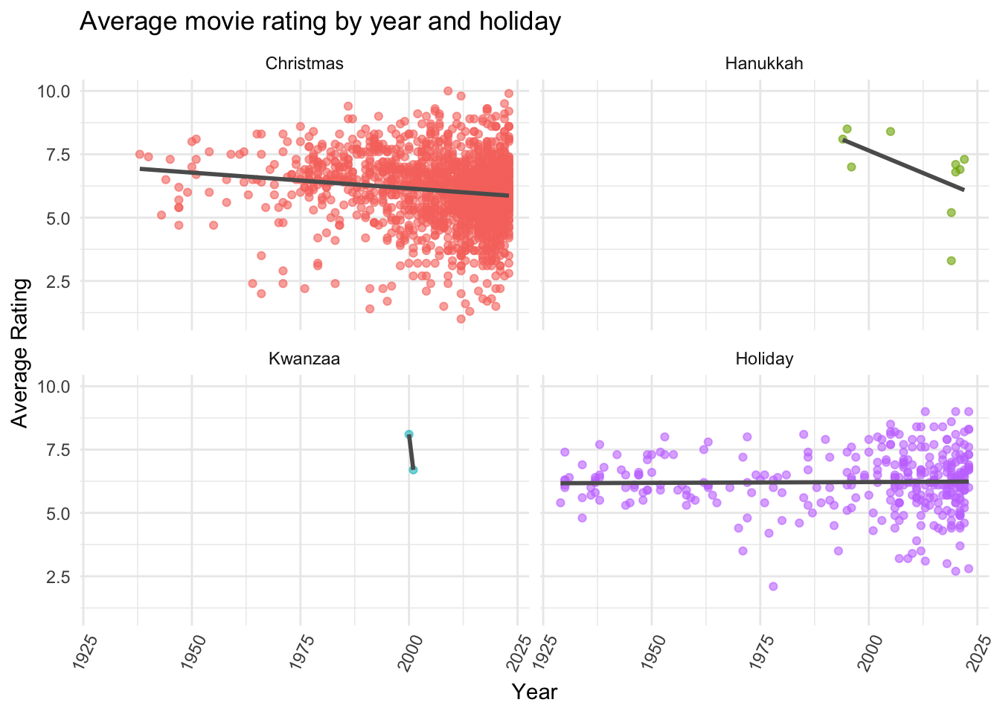

#load necessary libraries
library(tidyr)
library(readr)
library(ggplot2)
library(dplyr)
library(moderndive)Project Write-up
Write-up
Introduction:
The dataset we chose is the holiday movies dataset from the TidyTuesday repository with dimensions of 2265x14. Our dataset looks at “holiday” movies: movies with “holiday”, “Christmas”, “Hanukkah”, or “Kwanzaa” (or variants thereof) in their title. This dataset has 15 variables, some of which are: primary_title, original_title, year, runtime_minutes, genres, average_rating, and whether or not movies contain “Holiday”, “Christmas”, “Hanukkah”, or “Kwanzaa” in their titles (using “TRUE” or “FALSE”).
We chose this dataset because we are interested in investigating the relationship between movie types and their public receptions, as well as how elements of movies change over time. We wondered whether the specific holiday the movies were written for played a role in this, i.e. do Christmas movies fare better than Hanukkah movies?
Question 1:
How does type of holiday affect a movie’s rating, and for each holiday, how does the movie’s age affect its rating?
Introduction:
For this question, we start by looking at the columns “christmas”, “hanukkah”, “kwanzaa” and “holiday”. Each film is assigned either “TRUE” or “FALSE” for if its title contains any of these words. To clean the data, we combined these columns into one, “holidays”, using the pivot_longer function. Then we compared the different factors; the type of holiday movie it is, the movies’ average rating, and the year it was made (ie. the age of the movie).
Approach:
To visualize this question, made a histogram plot showing the frequency of average rating by movie type and a scatterplot with a line of best fit showing average rating by year for each holiday. The histogram is able to show us the frequency of certain ratings and the scatterplot is able to show us all the individual data points, as well as lines of best fit associated with different holidays.
Analysis:


Discussion:
Our first plot shows that overall it seems like Kwanzaa movies are slightly above the 5.0 mark, but there are so few data points that it is hard to draw meaningful conclusions about them. This graph also shows us that Hanukkah movies have relatively high ratings, but are more variable compared to Christmas and holiday movies overall.
Our second plot shows that overall ratings for holiday movies have decreased slightly but have been fairly consistent. It also more clearly exposes a lack of datapoints for both Kwanzaa and Hanukkah movies.
These two graphs lead us to the conclusion that the type of holiday mentioned in the title has a limited effect on the average rating, but as year increases the ratings for all typeshave slightly decreased.
Question 2:
How do movie run times vary over time? Have holiday movies gotten longer over time? Shorter? Is there a significant difference of run time over time?
Introduction:
In our second question, we examine how movie runtime changes by movie type and age. To explore this, we used the variables runtime_minutes (the length of each movie), year (the year the movie was released in), and the type of movie (whether it contains Christmas, Holiday, Kwanzaa, or Hanukkah in the title). We looked to see if there was variation in movie length depending on its age, and if there was variation in average movie length based on its title.
Approach:
For our second question we made a violin plot that shows runtime by holiday. By using a violin plot, we are able to look at the density of runtime for each holiday, however it is important to note that the densities are not proportional in relation to each other. We also made a scatterplot showing runtime by year and holiday. The scatterplot is able to show us the individual points (representing individual movies), and how the trend in runtime has changed over the years. We included a linear model in order to gain an understanding of the strength of the correlation between these variables.
Analysis:
Linear Model:
# A tibble: 5 × 7
term estimate std_error statistic p_value lower_ci upper_ci
<chr> <dbl> <dbl> <dbl> <dbl> <dbl> <dbl>
1 intercept -654. 66.3 -9.88 0 -784. -524.
2 year 0.364 0.033 11.0 0 0.3 0.429
3 holidays: hanukkah -23.9 8.14 -2.93 0.003 -39.8 -7.90
4 holidays: kwanzaa -59.2 18.2 -3.26 0.001 -94.8 -23.6
5 holidays: holiday 12.2 1.66 7.37 0 8.99 15.5 Runtime (in minutes) =
-654.399 + 0.364*(Year) - 23.871(Hanukkah) - 59.210(Kwanzaa) + 12.247(Holiday)
The intercept is Christmas, meaning that the -654.399 is the predicted runtime for a movie that has Christmas in the title and is made in the year 0. This intercept is not particularly useful, but it is important to recall the baseline the model builds from.
Increasing year by 1, while keeping all else fixed, is associated with an 0.364 minute increase in the average run time, according to the model.
For Kwanzaa and Hanukkah the model predicts decreases in run time if the holidays are mentioned in the title of a movie. This is also true of Christmas, which is the intercept, but not of movies that mention “holiday” in the title. This aligns with our findings from the violin plot, as movies with holiday in the title have a higher average runtime than movies with Christmas in the title.
Discussion
Our first plot shows that Kwanzaa movies have the shortest runtimes (although this again is likely due to the very small sample size of Kwanzaa movies), with Hanukkah being next, and Christmas having the longest with a concentration around 90 minutes. We also see that holiday movies in general are typically around 90 minutes but have a wide range.
When examining the variation in movie run time compared to age (our second plot), we found that run time has increased slightly over the years, especially in movies with the words “christmas” and “hanukkah” in their titles, however, there visually doesn’t appear to be much change in average run time over the years for movies with “holiday” in the title. Given that there are only two movies with “kwanzaa” in the title, it isn’t really possible to draw any real conclusions regarding change in run time for these movies.
Through looking at both of our graphs and our linear model, christmas and hanukkah movies appear to have a greater increase in run time over years, but it is worth noting that both still have a lower average run time than the holiday movies. This is why our linear model shows holiday movies resulting in the greatest increase in movie time. Our p-values are statistically significant for all coefficients in our linear model, telling us that there is a connection between movie genre and run time, as well as between when a movie was released and run time. More research would be necessary in order to determine an interaction effect between change in movie run time over years and movie type.